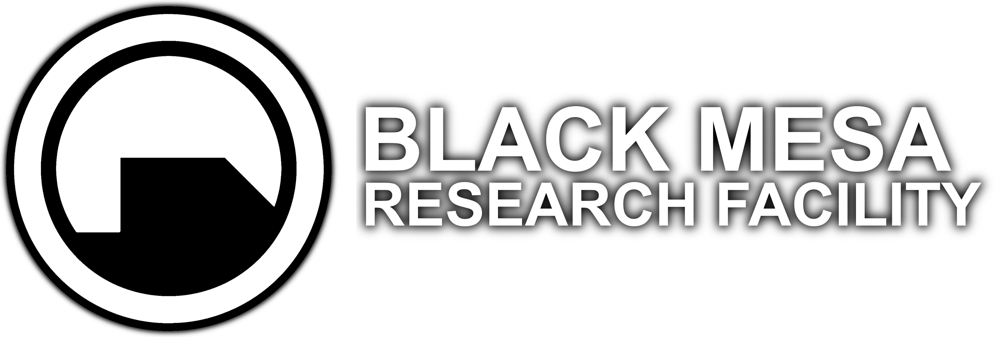
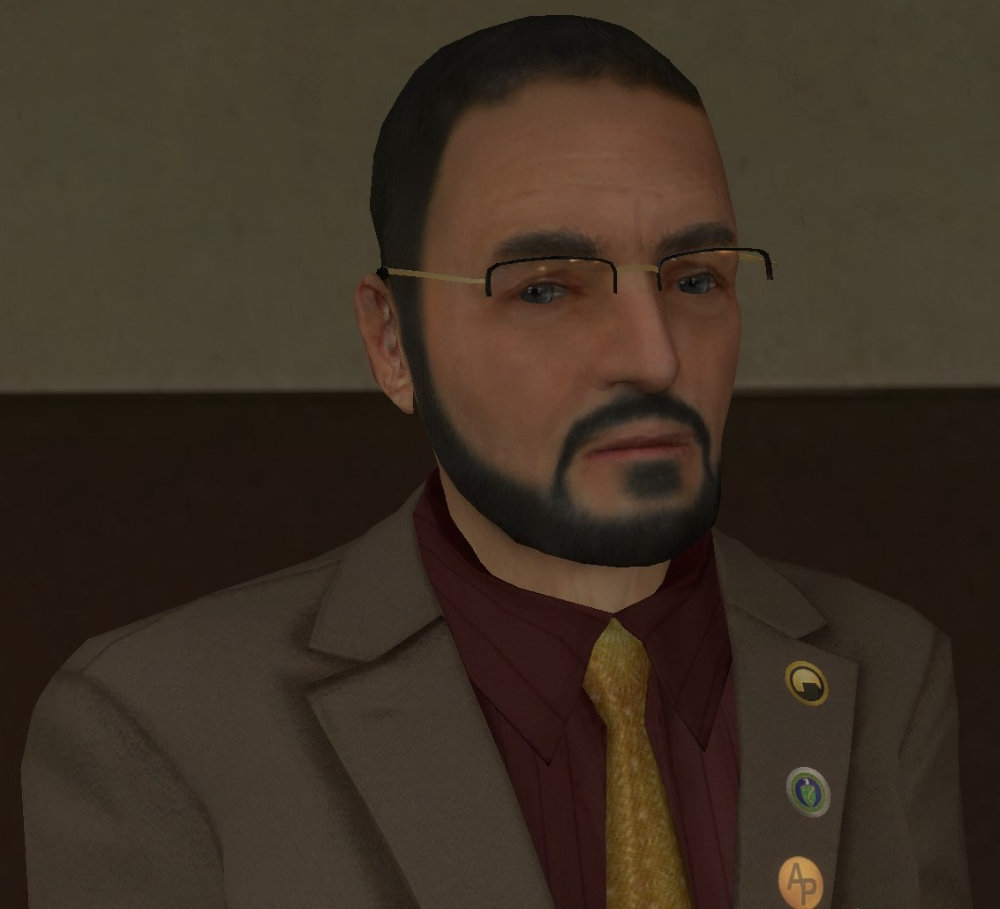
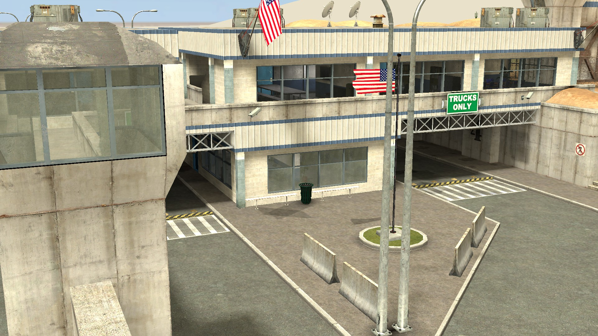

블랙 메사는 무엇인가요?
블랙 메사 연구 시설은 뉴멕시코 사막 깊은 곳, 과거 미사일 사일로 단지를 개조하여 세워진 세계적 수준의 연구 단지입니다.
민간에는 공군 기지로 알려져 있지만, 내부에서는 순수 과학부터 응용 과학까지 전 분야의 연구가 진행되고 있습니다.
연구 범위
- 이론 물리학 및 응용 수학
- 방사선 및 핵 연구
- 레이저 공학 및 유압학
- 로봇 공학 및 유전학
- 동물학 및 생물학
- 화학 및 첨단 소재 과학
- 수력 발전 및 에너지 연구
또한, 저희 연구소는 HEV 보호복 개발, 고도화된 로켓 및 인공위성 발사 실험, 나아가 버려진 ICBM 미사일 발사 기지의 활용을 통한 미래 우주 과학 발전에 기여하고 있습니다.
연혁 및 계보
-
리건 스트라우스 박사 (1955–1966)
초기 시설 창립자이자 강압적 리더십으로 알려짐.
-
칼레비 풀키넨 박사 (1966–1992)
연구 효율과 내부 신뢰도에서 가장 성공적인 행정가.
-
월리스 브린 박사 (1992–현재)

몇 안 되는 공식 입구
블랙 메사 연구소의 출입은 극도로 제한되어 있으며, 소수의 인증된 게이트를 통해서만 가능합니다.

정부와의 긴밀한 협력
- DOE (미 에너지부): 원자력, 방사선, 실험 원자로 관리 및 보안 감독
- DOD (미 국방부): 군사 기술, 무기 체계 연구, 항공 및 미사일 실험, 보안
미 해병대와 DOE 보안 부대가 시설의 안전을 보장합니다.
자급자족적 운영
- 보안 부대 (자체 경찰, SSF, FRTOU)
- 소방서 및 구조대
- 병원 및 정신과 등 의료 부서
- 발전소, 항공 시설, BMTA, BMAA
- 식당, 기숙사, 케이터링 부서 등 생활 기반 시설
부서 소개
연구 및 실험 분야
블랙 메사는 다음과 같은 첨단 분야에서 활동합니다:
- 이론 물리학, 방사선, 레이저, 유압
- 로봇 공학, 유전학, 동물학, 화학
- 수력 발전, 응용 수학, 소재 과학
- HEV/PCV 등 방호복 및 군사 장비 개발
- 로켓 및 위성 발사 실험
© 2025 Black Mesa Research Facility. All Rights Reserved.